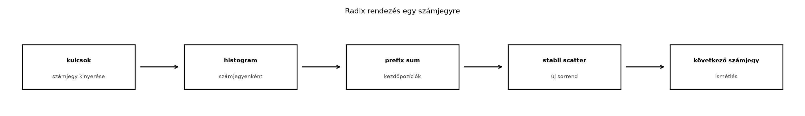

A rendezés az egyik legalapvetőbb – és leggyakrabban kritikus –
építőköve a nagy áteresztőképességű adatfeldolgozásnak. Az előző
alfejezetben (CUB és Thrust) a DeviceRadixSort használatát
láttuk; nagy adathalmazokon (N > 10^6) a GPU-s rendezés
jellemzően felülmúlja a CPU-s megoldásokat (ezt a saját gépen mérni
kell); ehhez azonban el kell engednünk a klasszikus,
összehasonlítás-alapú rendezések (pl. quick sort, merge sort) reflexeit.
Az összehasonlítás-alapú rendezések alsó korlátja
,
ami korlátozza a skálázhatóságot.
A GPU-k párhuzamos architektúrájához sokkal jobban illeszkedik a számjegyalapú (radix) rendezés, amelynek időkomplexitása lineáris: , ahol a menetek (feldolgozott számjegyek) száma. A radix sort nem hasonlítja össze az elemeket, hanem a kulcsok bináris ábrázolását használja fel arra, hogy az elemeket rekeszekbe sorolja.
Míg egy CPU-n a radix sort gyakran lassabb az erős cache-kihasználtságú introspektív rendezéseknél, a GPU ezres nagyságrendű aktív szálával és gyors shared memory-jával jó környezetet biztosít a radix sort fázisainak (hisztogram, scan, szórás) párhuzamosítására. Ebben az alfejezetben ezeket a fázisokat valósítjuk meg CUDA C++ alapon, a redukcióról és a scanről szóló alfejezetek eredményeire építve.
A radix sort a kulcsokat bit hosszúságú számjegyekre (digit) bontja. A gyakorlatban GPU-n a 4 bites (16 rekesz) vagy 8 bites (256 rekesz) bontás a legelterjedtebb. 32 bites kulcsokra a 8 bites számjegy 4 menetet, a 4 bites számjegy 8 menetet jelent; a nagyobb számjegy tehát kevesebb menetet, de nagyobb hisztogramot igényel.
A rendezés az LSD (Least Significant Digit) elv szerint halad: a legkisebb helyiértékű számjegytől a legnagyobbig. Minden digit pass három alapműveletből áll:
Az alábbi diagram egy számjegy menetét mutatja.

Miért kritikus a stabilitás? Ha az LSD radix sort nem őrizné meg az azonos rekeszbe kerülő elemek sorrendjét, az előző (alacsonyabb helyiértékű) menetekben már rendezett sorrend elveszne.
Ha key a rendezendő 32 bites kulcs, shift
pedig az aktuális számjegy helye (0, 8, 16, 24), a rekesz indexe:
unsigned int digit = (key >> shift) & 0xFF; // 8 bites számjegyBlokk-szintű hisztogram. Egy naiv megoldás, ha
minden szál globális atomicAdd-ot végez a 256 rekeszre; ez
lassú, mert sok ezer szál versengene ugyanazokért a címekért. A helyes
minta a blokk-szintű privatizáció: minden thread block
a saját shared memory-jában épít lokális hisztogramot (256 darab
unsigned int, 1 KB). A szálak kinullázzák a tömböt,
__syncthreads(), majd shared memory-s
atomicAdd-del számolnak. Ez lényegesen gyorsabb a
globálisnál, de azonos rekeszt növelő szálaknál az atomi műveletek
sorosítódnak (atomi kontenció; ez nem shared memory bank conflict, mert
azonos címre irányulnak). Erre a későbbi finomítás a warp-szintű
privatizáció (s_hist[warp][bin], majd összegzés)
vagy a __match_any_sync alapú warp-aggregáció.
A blokkonkénti hisztogramok elrendezése. A stabil
szóráshoz nem elég az egyetlen globális hisztogram: minden blokk saját
számlálóit is ismernünk kell. Ezért a blokkok hisztogramjait egy
hist[bin * num_blocks + block] elrendezésű (rekesz-major)
tömbbe írjuk. Ezen a tömbön egyetlen globális exkluzív
scan pontosan azt adja meg, hogy a bin rekeszhez
tartozó, a block blokkba eső elemek hol kezdődnek a
kimenetben: előbb a kisebb rekeszek minden eleme, majd az azonos rekesz
korábbi blokkjainak elemei.
Az alábbi ábra egy teljes menetet követ végig kis példán (2 bites számjegy, két 4 elemes blokk); a 17.1.4 stabil szórásának lépései ugyanezt a célindexet számolják.
Ismerjük minden (rekesz, blokk) pár kezdőcímét
(offsets). A stabilitás itt azt jelenti: ha A
és B ugyanabba a rekeszbe tartozik és az inputban
A előbb van, mint B, akkor az outputban is
A van előbb.
Naiv globális szórás (hibás): minden szál globális
atomicAdd-del kér pozíciót a saját rekeszének kezdőindexén.
Az atomi műveletek sorrendje nem determinisztikus, ezért az azonos
rekeszbe tartozó elemek összekeverednek: ez nem stabil
rendezés.
Stabil, determinisztikus szórás:
offsets[bin * num_blocks + blockIdx.x] értéke a
blokk szegmensének kezdete az adott rekeszre; ez a szegmens a scan miatt
a korábbi blokkok szegmensei után következik, a blokkütemezéstől
függetlenül.threadIdx.x-ű szál tartozik ugyanabba a rekeszbe (ez a szál
sorszáma a rekeszen belül, rank).offsets[...] + rank pozícióba
írja.A laborban a rank számítása egyszerű, soros ciklus a
shared memory-ban tárolt rekeszindexeken: szálanként legfeljebb 255
shared memory olvasás. Ez oktatási célú,
költségű megoldás elemenként (összesen
shared memory művelet menetenként); a termelési implementációk ezt
blokk-szintű scannel vagy warp-szintű
__match_any_sync/ballot műveletekkel váltják ki. A CUB
DeviceRadixSort ezen túl decoupled look-back scant
használ a blokkok közötti offsetekhez; a laborbeli három-kernelű (count
– scan – scatter) szerkezet ennek az egyszerűbb, kiindulási változata,
nem look-back.
A fenti algoritmus unsigned int kulcsokra működik.
Előjeles egészek és lebegőpontos számok rendezéséhez
bit-transzformációra van szükség, amely a rendezés
előtt monoton leképezést végez a kulcsokra, utána pedig az inverz
transzformációt kell alkalmazni a kimeneten.
Előjeles egészek (int): a negatív
számok legmagasabb bitje 1, ezért unsigned-ként nagyobbnak
tűnnek a pozitívaknál. Megoldás: a legmagasabb bit megfordítása,
key = u ^ 0x80000000u; az inverz ugyanez a
művelet.
Lebegőpontos (float): a pozitív
float-ok sorrendje megegyezik az unsigned bitképük
sorrendjével, a negatívoké fordított. Helyes transzformáció és
inverze:
__device__ unsigned int float_to_key(float f) {
unsigned int u = __float_as_uint(f);
unsigned int mask = (u >> 31) ? 0xFFFFFFFFu : 0x80000000u;
return u ^ mask;
}
__device__ float key_to_float(unsigned int k) {
unsigned int mask = (k >> 31) ? 0x80000000u : 0xFFFFFFFFu;
return __uint_as_float(k ^ mask);
}A negatív számok minden bitje megfordul (ezért lesz a sorrend
helyes), a pozitívaknál csak az előjelbit. A ternáris operátort a
fordító jellemzően predikált/szelektív utasítássá alakítja, de ez nem
garantált „elágazásmentesség”; a mintát
mask = -(u >> 31) | 0x80000000u alakban is
felírhatjuk. Megjegyzések: a -0.0f kulcsa kisebb a
+0.0f-énél (a két érték különbözőnek számít), a pozitív
NaN-ok a +inf után, a negatív NaN-ok a -inf
előtt kerülnek. Ellenőrzés kis teszttömbbel (-2,
-0, 0, 1,5) CPU-s
std::sort-tal való összevetéssel végezhető.
A laborban egy 8 bites számjegyű, 4 menetes radix sortot valósítunk
meg 32 bites unsigned int kulcsokra, három lépésben
menetenként: hisztogram-kernel, a CUB
DeviceScan::ExclusiveSum a (rekesz, blokk) tömbön, majd
stabil szórás-kernel. A 4 bites (8 menetes) változat hisztogramja kisebb
és a warp-szintű műveletekkel jól szemléltethető, de több menetet
igényel.
Környezet (tervezett; a mért értékeket a saját környezetben
kell rögzíteni): * Nyelv és fordító: CUDA C++
(C++17), nvcc (CUDA Toolkit 12.x; a CUB a Toolkit része) *
GPU: NVIDIA RTX 3090 (Compute Capability 8.6) vagy más,
saját/engedélyezett GPU; a -arch értéke ehhez igazítandó *
Driver / OS: a saját környezet adatai (<mért –
kitöltendő>)
Kód (radix_sort.cu), nem fordított, nem futtatott vázlat – az első futtatás eredményét a mérési naplóba kell írni:
#include <cstdio>
#include <cstdlib>
#include <cmath>
#include <utility>
#include <vector>
#include <algorithm>
#include <cuda_runtime.h>
#include <cub/cub.cuh>
// a könyv kanonikus hibamakrója (1.2)
#define CUDA_CHECK(call) do { \
cudaError_t err = (call); \
if (err != cudaSuccess) { \
fprintf(stderr, "CUDA error at %s:%d - %s\n", __FILE__, __LINE__, cudaGetErrorString(err)); \
exit(EXIT_FAILURE); \
} \
} while (0)
#define NUM_BINS 256
#define BLOCK_SIZE 256
// 1. kernel: blokkonkénti hisztogram, hist[bin * num_blocks + block] elrendezésben
__global__ void histogram_kernel(const unsigned int* input, unsigned int* hist,
int N, int shift, int num_blocks) {
__shared__ unsigned int s_hist[NUM_BINS];
int tid = threadIdx.x;
for (int i = tid; i < NUM_BINS; i += blockDim.x) s_hist[i] = 0;
__syncthreads();
int idx = blockIdx.x * blockDim.x + tid;
if (idx < N) {
unsigned int bin = (input[idx] >> shift) & 0xFF;
atomicAdd(&s_hist[bin], 1u);
}
__syncthreads();
// minden rekesz értékét kiírjuk (a nullákat is: a scannek teljes tömb kell)
for (int i = tid; i < NUM_BINS; i += blockDim.x)
hist[i * num_blocks + blockIdx.x] = s_hist[i];
}
// 3. kernel: stabil szórás; offsets = a hist tömb exkluzív prefix összege
__global__ void scatter_kernel(const unsigned int* input, unsigned int* output,
const unsigned int* offsets, int N, int shift,
int num_blocks) {
__shared__ unsigned int s_bins[BLOCK_SIZE]; // BLOCK_SIZE == blockDim.x
int tid = threadIdx.x;
int idx = blockIdx.x * BLOCK_SIZE + tid;
bool valid = idx < N;
unsigned int key = 0, bin = 0;
if (valid) {
key = input[idx];
bin = (key >> shift) & 0xFF;
}
s_bins[tid] = valid ? bin : 0xFFFFFFFFu; // őrszem az érvénytelen szálaknak
__syncthreads();
if (valid) {
// rank: hány korábbi (kisebb tid) szál tartozik ugyanabba a rekeszbe -> stabilitás
unsigned int rank = 0;
for (int i = 0; i < tid; ++i) rank += (s_bins[i] == bin);
output[offsets[bin * num_blocks + blockIdx.x] + rank] = key;
}
}
// Teljes rendezés: az eredmény 4 menet (páros szám) után a d_a pufferben van.
static void radix_sort(unsigned int* d_a, unsigned int* d_b, unsigned int* d_hist, unsigned int* d_off,
void* d_temp, size_t temp_bytes, int N, int num_blocks) {
const int hist_items = NUM_BINS * num_blocks;
for (int shift = 0; shift < 32; shift += 8) {
histogram_kernel<<<num_blocks, BLOCK_SIZE>>>(d_a, d_hist, N, shift, num_blocks);
CUDA_CHECK(cudaGetLastError());
CUDA_CHECK(cub::DeviceScan::ExclusiveSum(d_temp, temp_bytes, d_hist, d_off, hist_items));
scatter_kernel<<<num_blocks, BLOCK_SIZE>>>(d_a, d_b, d_off, N, shift, num_blocks);
CUDA_CHECK(cudaGetLastError());
std::swap(d_a, d_b); // lokális csere; 4 menet után d_a ismét az eredeti puffer
}
}
int main() {
const int N = 1 << 22; // 4 194 304 elem
const size_t bytes = (size_t)N * sizeof(unsigned int);
const int num_blocks = (N + BLOCK_SIZE - 1) / BLOCK_SIZE;
const int hist_items = NUM_BINS * num_blocks;
std::vector<unsigned int> h_input(N), h_output(N);
srand(42);
for (int i = 0; i < N; ++i)
h_input[i] = ((unsigned)rand() << 16) ^ (unsigned)rand(); // teljes 32 bites tartomány
unsigned int *d_orig, *d_a, *d_b, *d_hist, *d_off;
CUDA_CHECK(cudaMalloc(&d_orig, bytes));
CUDA_CHECK(cudaMalloc(&d_a, bytes));
CUDA_CHECK(cudaMalloc(&d_b, bytes));
CUDA_CHECK(cudaMalloc(&d_hist, (size_t)hist_items * sizeof(unsigned int)));
CUDA_CHECK(cudaMalloc(&d_off, (size_t)hist_items * sizeof(unsigned int)));
CUDA_CHECK(cudaMemcpy(d_orig, h_input.data(), bytes, cudaMemcpyHostToDevice));
// a CUB scan ideiglenes tárterülete egyszer, nullptr-rel lekérdezve
void* d_temp = nullptr;
size_t temp_bytes = 0;
CUDA_CHECK(cub::DeviceScan::ExclusiveSum(d_temp, temp_bytes, d_hist, d_off, hist_items));
CUDA_CHECK(cudaMalloc(&d_temp, temp_bytes));
cudaEvent_t start, stop;
CUDA_CHECK(cudaEventCreate(&start));
CUDA_CHECK(cudaEventCreate(&stop));
const int WARMUP = 5, ITERS = 20; // a könyv mérési protokollja: >= 5 warm-up, >= 20 ismétlés
std::vector<float> times;
for (int it = 0; it < WARMUP + ITERS; ++it) {
CUDA_CHECK(cudaMemcpy(d_a, d_orig, bytes, cudaMemcpyDeviceToDevice)); // minden futás rendezetlen inputról indul
CUDA_CHECK(cudaDeviceSynchronize());
CUDA_CHECK(cudaEventRecord(start));
radix_sort(d_a, d_b, d_hist, d_off, d_temp, temp_bytes, N, num_blocks);
CUDA_CHECK(cudaEventRecord(stop));
CUDA_CHECK(cudaEventSynchronize(stop));
float ms = 0.0f;
CUDA_CHECK(cudaEventElapsedTime(&ms, start, stop));
if (it >= WARMUP) times.push_back(ms);
}
CUDA_CHECK(cudaMemcpy(h_output.data(), d_a, bytes, cudaMemcpyDeviceToHost));
// Validáció: egyezés a CPU-s std::sort eredményével (rendezettség + permutáció)
std::vector<unsigned int> ref = h_input;
std::sort(ref.begin(), ref.end());
bool ok = (ref == h_output);
// medián és IQR (ITERS páros)
std::sort(times.begin(), times.end());
double med = 0.5 * (times[ITERS / 2 - 1] + times[ITERS / 2]);
double iqr = times[3 * ITERS / 4] - times[ITERS / 4];
// Számított hasznos kulcsforgalom (nem a teljes forgalom): 4 menet x (2 olvasás + 1 írás) x 4N bájt = 48 N bájt
// (a hisztogram- és offsettömbök forgalma nélkül; a szórás írásai nem koaleszkáltak)
double traffic_gb = 48.0 * N / 1e9;
printf("Radix sort eredmeny: %s\n", ok ? "HELYES" : "HELYTELEN");
printf("Elemek: %d, futasok: %d (warm-up: %d)\n", N, ITERS, WARMUP);
printf("Median ido (4 menet): %.3f ms, IQR: %.3f ms\n", med, iqr);
printf("Szamitott adatforgalom / ido: %.2f GB/s\n", traffic_gb / (med / 1000.0));
CUDA_CHECK(cudaFree(d_orig)); CUDA_CHECK(cudaFree(d_a)); CUDA_CHECK(cudaFree(d_b));
CUDA_CHECK(cudaFree(d_hist)); CUDA_CHECK(cudaFree(d_off)); CUDA_CHECK(cudaFree(d_temp));
CUDA_CHECK(cudaEventDestroy(start)); CUDA_CHECK(cudaEventDestroy(stop));
return ok ? 0 : 1;
}Fordítás és futtatás (a -arch a saját
GPU compute capability-jéhez igazítandó; hibás vagy ismeretlen kernel
esetén timeouttal és izolált környezetben futtassuk, a hibakeresésre
compute-sanitizer használható):
nvcc -arch=sm_86 -O3 -std=c++17 -o radix_sort radix_sort.cu
timeout 60 ./radix_sortMérési napló (sablon – a mért értékeket a saját futtatásból kell kitölteni):
| Adat | Érték |
|---|---|
| Hardver, power limit | <mért – kitöltendő> |
| Driver / CUDA | <mért – kitöltendő> |
| Input | 4 194 304 véletlen unsigned int kulcs (teljes 32 bites
tartomány) |
| Warm-up / iterációk | 5 / 20 |
| Várt eredmény | HELYES (egyezés a std::sort
eredményével) |
| Mért medián idő (4 menet) | <mért – kitöltendő> ms |
| Mért IQR | <mért – kitöltendő> ms |
| Számított hasznos kulcsforgalom / idő | <mért – kitöltendő> GB/s (48 N bájt 0,20 GB; a hisztogram-, scan- és offsetforgalommal együtt 106 N bájt 0,44 GB – kézzel levezetett becslés, nem futtatott) |
Értékelés: a 48 N bájt csak a kulcsok forgalma.
Mivel a labor szálanként egy elemet dolgoz fel, a (rekesz, blokk)
hisztogramtömb ugyanakkora, mint a bemenet
(
elem), így a scan menetenként a teljes bemenettel azonos nagyságrendű
forgalmat okoz; a szálankénti több elem (például 16 elem/szál) ezt a
töredékére csökkenti. Az oktatási célú implementáció a CUB
DeviceRadixSort teljesítménye alatt marad várhatóan, többek
között azért, mert a szórás fázisban a blokkon belüli sorszám
meghatározása szálanként
shared memory olvasás, és a szórás írásai nem koaleszkáltak. A CUB
számát ugyanazon az inputon, ugyanazzal a mérési módszerrel kell
megmérni és összevetni (baseline); egyetlen konkrét sávszélesség-érték
itt nincs ígérve. A gyakorlatban emiatt optimalizált könyvtári
primitíveket (az előző alfejezet CUB-ja) használunk.
Nem stabil szórás: a leggyakoribb hiba, amikor a
fejlesztő a scatter fázisban globális atomicAdd-ot használ
a pozíciókiosztásra. Ez hibás, mert az atomi műveletek sorrendje nem
determinisztikus. Helyes megoldás: blokkonkénti hisztogramok
rekesz-major elrendezésben + globális exkluzív scan, blokkon belül
rendezett sorszám (lokális scan, warp ballot vagy
__match_any_sync).
Atomi kontenció a shared memory hisztogramban:
ha sok szál ugyanazt a rekeszt növeli (például rendezett vagy sok azonos
kulcsot tartalmazó input), az azonos címre irányuló
atomicAdd-ok sorosítódnak. Ez nem bank conflict; az
XOR-indexelés sem csökkenti. Helyes megoldás: warp-onkénti
privatizált hisztogram (s_hist[warp][bin]), majd
összegzésük, vagy warp-szintű aggregáció.
Előjeles/lebegőpontos kulcsok kezelése nélkül:
ha az int vagy float kulcsokat sima
unsigned-ként rendezzük, a negatív számok a tömb végére,
hibás sorrendbe kerülnek. Helyes megoldás: a kulcsok
transzformálása rendezés előtt és az inverz transzformáció utána, ahogy
a float-kulcsokról szóló szakaszban láttuk.
Nincs __syncthreads() a hisztogram nullázása
után: ha a shared memory nullázása és az első növelés között
nincs szinkronizáció, az egyik szál növelhet, mielőtt a másik nullázna.
Helyes megoldás: a nullázó ciklus után kötelezően
__syncthreads(), ahogy a mintakódban.
A hisztogram scan nélkül használata: a rekeszszámok nem kezdőcímek. A scatter előtt exkluzív prefix összeg kell, különben a célindex kimenetre kívülre is eshet (határon kívüli írás).
Önellenőrző kérdések: 1. Miért nem használhatunk
globális atomi műveletet a stabil radix sort scatter fázisában a
pozíciók kiosztására? Vázlat: az atomi műveletek sorrendje a
blokk- és szálütemezéstől függ, így az azonos rekeszbe tartozó elemek
sorrendje nem marad meg; a stabilitás az LSD radix sort helyességének
feltétele. 2. Hogyan rendeznénk egy float típusú tömböt
radix sort segítségével? Vázlat: monoton bit-transzformáció
(negatívnál minden bit, pozitívnál az előjelbit megfordítása),
unsigned rendezés, majd az inverz transzformáció; a -0 és
NaN kezelését külön el kell dönteni. 3. Miért hatékonyabb a 8 bites
radix sort a 4 bitesnél a menetek számát tekintve, annak ellenére, hogy
a shared memory-s hisztogram mérete nagyobb? Vázlat: 32 bites
kulcsra 4 menet szemben 8 menettel; minden menet a teljes tömböt olvassa
és írja, tehát feleannyi globális adatforgalom, a 256 rekeszes
hisztogram (1 KB) pedig még elfér a shared memory-ban, bár a rekeszek
száma a kontenciót és a scan méretét befolyásolja.